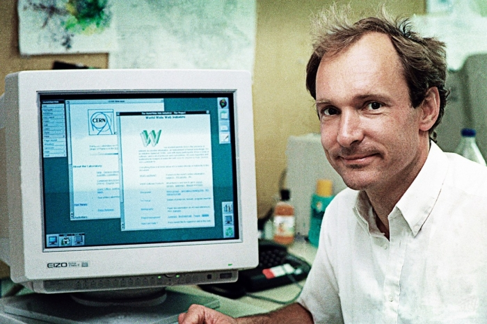

Timothy John Berners-Lee nasceu em Londres, Inglaterra, em 8 de junho de 1955. Ele é um físico britânico, cientista da computação e professor do MIT (Instituto de Tecnologia de Massachusetts, em inglês). Seu cargo mais conhecido é ser o criador da World Wide Web, o famoso termo técnico WWW.
físico britânico, cientista da computação e professor do MIT.
Tim frequentou o The Queen’s College, em Oxford, entre 1973 e 1976, onde obteve um diploma em física. Em 1980 enquanto atuava como contratante independente do CERN (Organização Europeia para a Pesquisa Nuclear) propôs um projeto baseado no conceito de hipertexto para facilitar a partilha e atualização de informações entre os pesquisadores. Depois de deixar o CERN em 1980 trabalhou em outra empresa até 1984, em que retornou para a organização. Em 1989, Berners-Lee viu a oportunidade de unir hipertexto com internet e criar a World Wide Web. O primeiro site foi construído no CERN e foi ao ar em 1991 e era uma página simples de texto que oferecia uma explicação sobre o que era a World Wide Web, como alguém poderia criar um navegador, configurar um servidor web, etc. Em 1994, fundou o World Wide Web Consortium (W3C) no MIT. É composto por várias empresas que estavam dispostas a criar normas e recomendações para melhorar a qualidade na web. Em 2004, aceitou uma cadeira de Ciência da Computação da Faculdade de Eletrônica e Ciências da Computação da Universidade de Southampton, na Inglaterra, para trabalhar no projeto Web semântica. Em 2009, foi anunciado que o físico trabalharia com o governo britânico para ajudar a tornar os dados mais abertos e acessíveis na Web.